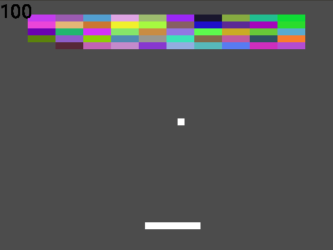
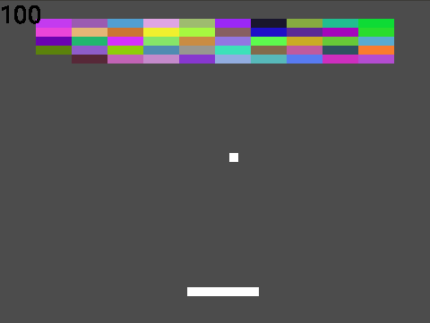

Play-cljcを使おう
Tags:Clojure2019-12-08
Clojure Advent Calendar 2019 の8日目の記事です。
おくれてすみません。引っ越しで忙しくてすっかり忘れておりました。
私はNiyarinと申します。Lisp(Scheme)歴はそれなりに長いのですが、Clojureは数ヶ月前からインターンで書き始めたばかりです。同じ初心者に向けてカジュアルなゲームでも作ってClojureを楽しく勉強しようという記事を書きたかったのですが、数少ないclj系ゲームライブラリであるplay-cljcは簡単な関数一覧と少しのサンプルしかなく、まずPlay-cljcのチュートリアル記事を先に作ったほうが良さそうという状況でした。というわけで、今回は、play-cljcの使い方をブロック崩しのようなものを作りながら理解しようという内容です。
デスクトップ上で動かしたければ、
ブラウザ上で動かしたければ、
色を変更します。RGBAで1.0から0.0です。下は赤色の設定です。
指定した座標にentityを置きます。 そのためにはにt/projectでゲームサイズを与える必要があります。下の例は100,200に置く例です。
下の例は300,400のサイズに変形する例です。

更新/描画 部分は以下です。aliveならばrenderするようになっています。
fontデータも通常のentityと同じようにコンパイルが必要です。固定のfontデータの場合、文字列からテキストentityを作ります。
今回のポイントのように動的に変更させる必要がある場合、フォント画像データから切り出して動的に生成するのが本来のやりかただと思うのですが、面倒なので変更が必要になった場合定数と同じように作成してコンパイルするという方針をとります。
おしまい
おくれてすみません。引っ越しで忙しくてすっかり忘れておりました。
私はNiyarinと申します。Lisp(Scheme)歴はそれなりに長いのですが、Clojureは数ヶ月前からインターンで書き始めたばかりです。同じ初心者に向けてカジュアルなゲームでも作ってClojureを楽しく勉強しようという記事を書きたかったのですが、数少ないclj系ゲームライブラリであるplay-cljcは簡単な関数一覧と少しのサンプルしかなく、まずPlay-cljcのチュートリアル記事を先に作ったほうが良さそうという状況でした。というわけで、今回は、play-cljcの使い方をブロック崩しのようなものを作りながら理解しようという内容です。
導入方法
play-cljcのGithubページに書いてある内容をそのまま実行するだけです。clj -Sdeps "{:deps {leiningen {:mvn/version \""2.9.0\""}}}"
-m leiningen.core.main new play-cljc PROJECTNAME初期状態でカーソルキーで動かせるキャラクターが表示されるサンプルが入っています。デスクトップ上で動かしたければ、
clj -A:dev native
ブラウザ上で動かしたければ、
clj -A:devこれらはdevelop実行で、その他release用オプションはplay-cljcのREADMEを見てください。
各ファイルの説明
初期状態で配置されているファイルの説明をします。- core.cljc→ ゲームの初期化、更新など。今回はほぼこのファイルだけを触る。
- move.cljc→ プレイヤーの移動のロジックが書かれている。今回は不要なので消す。core.cljcが膨らむ場合、このようにまとめれるものは別ファイルにまとめておいたほうが良い。
- music.cljc→ 名前の通り音声関係。今回は使用しない。
- start.clj→ desktop版のシステム面の初期設定をするファイル。ウィンドウサイズを変更したりする程度しか触らない。
- start.cljs→ ブラウザ版のシステム面のファイル。ほぼ触ることはない。
- start_dev.clj start_dev.cljs,→ これらもシステム面のファイル。ほぼ触ることはない。
- util.cljc→ 初期状態のプレイヤー移動サンプル用の画像操作utilityファイル。便利そうだけど今回は使わない。他で使えそうではある
core.cljcの重要な要素
core.cljcはユーザー側のファイルなのでここで紹介する関数名はplay-cljc側で定義されているものではありません。デフォルトの構成のまま開発すれば便利なのでそのまま利用します。*state
*stateはゲーム内で扱いたい情報を格納する箇所です。初期状態ですと、プレイヤー画像や座標、速度情報などです。game
gameは内部的な情報をもたせるデータで描画時などで関数に渡します。関数に渡したりする程度であまりユーザーは触れません。init関数
entity(画像を格納したゲームで使うオブジェクト)や計算が必要な値をstateに追加します。tick関数
stateから画像entityを取り出して描画したり、オブジェクトの座標の更新をしたりします。entity
entityは画像、角度、座標、サイズなどの描画情報を含むデータです。矩形や頂点情報による任意の図形の描画や文字描画もentityも使います。また、ユーザーが好きな情報を追加することができます。制約としてコンパイル(≠ プログラム言語のコンパイル)しないと描画できないといった特徴があります。entity作成例
これは、矩形エンティティを作成する例です。 eはplay-cljc.gl.entites-2dで、p2dはplay-cljc.p2dです。(e/->entity game p2d/rect)entityはcompile関数に渡さないと描画できません。compileはこのようにします。cはplay-cljc.gl.coreです。
(c/compile game entity)
entityの操作
play-cljc.transformsでentityを変形できます。色を変更します。RGBAで1.0から0.0です。下は赤色の設定です。
(t/color [1.0 0.0 0.0 1])
指定した座標にentityを置きます。 そのためにはにt/projectでゲームサイズを与える必要があります。下の例は100,200に置く例です。
(t/project entity game-width game-height) (t/translate entity 100 200)
下の例は300,400のサイズに変形する例です。
(t/scale entity 300 400)
play-cljcでブロック崩しっぽものを作る
重要な部分を紹介します。全体はniyarin/breakout-cljcにあります。小さな例としてなので厳密ではありません。たまに衝突判定周りで良くない挙動をする箇所があります。
ブロックの描画。
ブロックエンティティを作成。座標情報px,pyと破壊されたかされていないかのalive情報を追加しています。色はランダムにいれています。
(let [block-entities
(for [x (range 10) y (range 5)]
(-> (c/compile game (e/->entity game p2d/rect))
(t/color [(rand) (rand) (rand) 1])
(assoc :px (+ 40 (* x 40)))
(assoc :py (+ 20 (* y 10)))
(assoc :alive true)))]
(swap! *state
assoc
:block-entities))更新/描画 部分は以下です。aliveならばrenderするようになっています。
(doseq [block-entity block-entities]
(when (:alive block-entity)
(c/render game
(-> (t/translate
(t/project block-entity game-width game-height)
(:px block-entity) (:py block-entity))
(t/scale 40 10)))))パドルの表示
矩形の表示という点ではブロックと変わりませんが、座標をマウスを使うのが特徴です。マウスの座標はstart.clj or cljsで*stateにセットされているのでtick内で*stateで取り出して使うだけです。マウスの中央にパドルの中央を合わせるようにします。
(let [{:keys [ 〜略〜
mouse-x
〜略〜 ] :as state} @*state
paddle-x
(->> (- mouse-x (/ (:width paddle-entity) 2))
(max 0)
(min (- game-width (:width paddle-entity))))]
ボールの座標更新
*stateの中のball情報を更新するだけです。少し長いので関数で切り離しました。やっていることは、内部に持っているvx,vyをそのままxとyに足すだけです。
(defn update-ball [state]
(let [ball (:ball-entity state)
{:keys [x y vx vy]} ball]
(assoc state
:ball-entity
(assoc ball
:x (+ x vx)
:y (+ y vy)))))壁との衝突判定
与えたstateからballを取り出して、game-widthとgame-heightを比較します。衝突した場合vx,vyの正負を反転させてstate内のball情報を更新させます。
(defn collision-wall [state game-width game-height]
(let [ball (:ball-entity state)
{:keys [x y vx vy r]} ball
new-vx (cond
(<= x 0) (- vx)
(>= (+ x r) game-width) (- vx)
:default vx)
new-vy (cond
(<= y 0) (- vy)
:default vy)]
(assoc state
:ball-entity
(assoc ball
:vx new-vx
:vy new-vy))))パドルとボールの衝突判定
paddleの左半分にあたった場合は左に飛ばして右半分にあたった場合は右に飛ばす処理です。衝突判定は普通にAABBです。これもボールの速度をstateに反映させるだけです。
(defn collision-paddle [state paddle-x paddle-y paddle-width paddle-height]
(let [ball (:ball-entity state)
{:keys [x y vx vy r]} ball
[new-vx new-vy]
(cond
(and (<= paddle-x (+ x r))
(<= x (+ paddle-x (/ paddle-width 2)))
(<= paddle-y (+ y r))
(<= y (+ paddle-y paddle-height)))
[(if (neg? vx) vx (- vx)) (- vy)]
(and (<= (+ paddle-x (/ paddle-width 2)) (+ x r))
(<= x (+ paddle-x paddle-width))
(<= paddle-y (+ y r))
(<= y (+ paddle-y paddle-height)))
[(if (neg? vx) (- vx) vx) (- vy)]
:default [vx vy])]
(assoc state
:ball-entity
(assoc ball
:vx new-vx
:vy new-vy))))ブロックとボールの衝突判定
少し複雑ですが、ブロックの上下側にあたった場合、vyの反転で、左右側にあたった場合vxの反転させます。ブロックのaliveフラグの更新もします。
(let [〜略〜
[hit-block new-vx new-vy new-x new-y];衝突ブロックと新しいvxとvyを取得する
(first
(->> block-entities
(map
#(let [{:keys [px py]} %
block-left px
block-right (+ px block-width)
block-top py
block-bottom (+ py block-height) ]
(and
(:alive %)
(<= block-left (+ x r))
(<= x block-right)
(<= block-top (+ y r))
(<= y block-bottom)
[%
(if (and (< block-top y)
(< y block-bottom))
(- vx) vx)
(if (and (< block-left x)
(< x block-right))
(- vy) vy)
(+ x (- vx))
(+ y (- vy))
])))
(drop-while not)))
new-block-entities ;衝突ブロックのaliveをfalseにする
(map #(if (= % hit-block) (assoc % :alive false) %)
block-entities)]
(if hit-block ;hit-blockがあった場合stateを更新する
(assoc state
:ball-entity
(assoc ball
:vx (if new-vx new-vx vx)
:vy (if new-vy new-vy vy)
:x new-x
:y new-y)
:block-entities
new-block-entities)
state) 得点の描画と更新
最後に得点の描画についてです。テキストの描画は少し特殊です。まずフォントを画像データに変換します。フォントの読み込みはdesktopとブラウザ用で分ける必要があります。
(defn load-font-clj [game bitmap]
{:bitmap bitmap
:font (text/->baked-font "ttf/Roboto-Regular.ttf" 32 bitmap)})
(defn load-font [game]
(let [bitmap (text/->bitmap 512 512)]
#?(:clj (load-font-clj game bitmap)
:cljs 〜略〜)))fontデータも通常のentityと同じようにコンパイルが必要です。固定のfontデータの場合、文字列からテキストentityを作ります。
(let [{:keys [font bitmap]} (load-font game)
font-entity
(->> (gl-text/->font-entity game (:data bitmap) font)
(c/compile game))
point-entity
(->> (gl-text/->text-entity game font-entity "0")
(c/compile game))〜略〜]今回のポイントのように動的に変更させる必要がある場合、フォント画像データから切り出して動的に生成するのが本来のやりかただと思うのですが、面倒なので変更が必要になった場合定数と同じように作成してコンパイルするという方針をとります。
(let [point' (* (count (filter #(not (:alive %)) block-entities))
100)]
(when (not= point point')
(swap! *state
assoc
:point-entity
(->> (gl-text/->text-entity game
font-entity (str point'))
(c/compile game))
:point point'))
(c/render game
(-> (t/project point-entity game-width game-height)
(t/scale (:width point-entity) (:height point-entity))
(t/translate 0 0))))終わり
play-cljcの基本的な道具を説明しました。基本的な部分ばかりですが、ある程度のゲームは作れると思います。おしまい